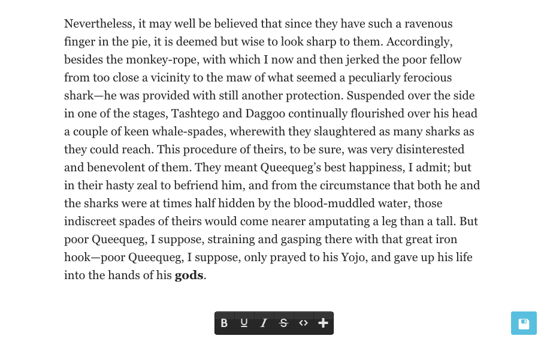

Lasso is a front-end editor plugin for WordPress allows you to create, edit, and publish content on the front-end, and was originally designed to work closely with Aesop Story Engine, the free WordPress plugin for storytelling. This is the very same editor found on Story.AM. Out-of-the-box it works on any post type whether it be posts, pages, or custom post types. It also features built-in support for editing standard images inserted via the WordPress post editor, as well as front-end support for changing the title and featured image.
If you're utilizing Aesop Story Engine, the components can be moved freely around the post, and most component settings are adjusted in real-time. This includes gallery creation and editing, all done on the front-end.
The editor is a "toolbox overlay," so what you're seeing is 100% what you're getting, since you're editing the actual post content, and not just a preview of it.
Aesop Story Engine does not have to be active. In fact using the built-in filters and actions you can build an entirely new front-end editor specific to any use case.
Warning: Lasso saves the HTML of a post object into the database. If Aesop Story Engine is activated it converts these shortcodes into HTML on the fly. The only drawback that you need to be aware of, is this; if your post has anything other than text or an Aesop Story Engine component, it will save the HTML version of this. It's important to realize this when using Lasso.
Depending on your application, this may be desired. There's a setting to disable this shortcode conversion, which means you can use Lasso to build HTML layouts.
Two ways to install. Pick your poison. Aesop Story Engine is not required in order to use Lasso, but it is required if you want to utilize movable story components (unless using custom components).
Easy (through WordPress)
Not So Easy (FTP)
Note: If multisite, network activate the plugin. This will create a submenu page under the Settings tab in Network-->Dashboard within WordPress. All subsites on the network will use the settings from this main network panel. This is how the editor is configured on Story.AM.
Note: Lasso can be used independently of Aesop Story Engine. In fact, you can use the provided actions and filters to build your own components, and your own options within the Editor. The sky's the limit :).
Warning: Lasso saves the HTML of a post object into the database. If Aesop Story Engine is activated it converts these shortcodes into HTML on the fly. The only drawback that you need to be aware of, is this; if your post has anything other than text or an Aesop Story Engine component, it will save the HTML version of this. It's important to realize this when using Lasso.
Whether you have network activated Lasso on a multisite network, or simply have it activated on a single-site, the setup is still the same. At minimum, the editor requires the Article Class, or, the CSS class of the main container holding the post. Everything else is optional.
Note: There is only one requirement of the theme utilizing Lasso; the content area must have the_content filter applied via WordPress. For 99% of themes this is fine, but there are those odd balls that do exist.
Warning: Lasso saves the HTML of a post object into the database. If Aesop Story Engine is activated it converts these shortcodes into HTML on the fly. The only drawback that you need to be aware of, is this; if your post has anything other than text or an Aesop Story Engine component, it will save the HTML version of this. It's important to realize this when using Lasso.
The Editor controls can be found at the bottom of any page or post on the front-end. To start editing, click the "pen" icon. Then, click anywhere in the text and start typing. Highlight a piece of text with your mouse, then choose any of the available formatting options such as Bold, Underline, Italicize, or Strikethrough. The post can be saved by clicking the blue "disk" icon in the bottom right hand corner.

HTML can be inserted by clicking the "< >" icon. When you click away, the editor will remember where your cursor last left off, and will insert the HTML in the exact area. Note: HTML can't be edited from the front-end once inserted. You'll need to access your "text" tab within the backend post edit screen in WordPress.
Links can be created by first highlighting the text, then selecting the link icon in the toolbar. Type in the URL, then click the check button save. To edit an existing link, double click a link while in edit mode, and the link will be supplied in the permalink drop-up area. Change the link, then select the check button save, and the link will be udpated.
NEED GIF HEREStory components can be accessed by clicking the "+" after entering the editor. From here, you can drag an icon onto the story. After the component has been added, you can move it around the story as you see fit. The text in the story cannot be moved. Only components.
Within each component you'll find a settings bar with four icons. These icons will let you move the component, enter that components settings, clone that component, or delete that component.

First add the gallery component by dragging it from the component tray into a post. Select the gear icon, then select a gallery to load. If you have not created any galleries previously, then there will be a button to create a new gallery. For the time being, this area does require a page refresh but we hope to eliminate this in future updates.
Note: This feature is only available if Aesop Story Engine is installed.
NEED GIF HEREAdd a map component by dragging it from the component tray into a post. There is only one map allowed per post at this time. After adding, click anywhere on the map to add a map marker. Then, click the marker to add a location tooltip text. You can drag the markers around, as well as zoom out and adjust the pan. After things are setup the way you like, click "save locations." Then, save the post.
For the time being, to edit existing locations, delete the map component, and add it back again. The locations will not be removed, but for now this is the only way to invoke editing map locations. We hope to eliminate this on future updates.
Note: This feature is only available if Aesop Story Engine is installed.
NEED GIF HERELasso is amazingly extensive. In fact, you don't even have to have Aesop Story Engine active. There are multiple ways to extend the editor, and/or Aesop Story Engine. You can use it on custom fields without Aesop, or you can create custom components for Aesop Story Engine and use them within Lasso. You can also create individual custom components that are not made of shortcodes, with options as data attributes. All possible through actions and filters.
lasso_runs_on
Filter where Lasso can be used and who can use it. By default this is set to is_singular() and lasso_user_can() which equates to edit_posts.
apply_filters('lasso_localized_objects', $args )
Filter the array of objects being localized with js
apply_filters('lasso_insert_gallery_args', $args )
Filter the array of arguments for saving a post gallery.
apply_filters('lasso_insert_object_args', $args )
Filter the array of arguments for inserting a new post.
apply_filters('lasso_object_status_update_args', $args )
Filter the array of arguments for updating the status of a post object. I.e, draft to publish, etc.
apply_filters('lasso_object_save_args', $args )
Filter the array of arguments for saving an existing post object.
apply_filters('lasso_object_publish_args', $args )
Filter the array of arguments for publishing a new post object.
apply_filters('lasso_title_updated_args', $args )
Filter the array of arguments for updating a post object title.
lasso_components
Filter the list of components available to the editor. Here are a some examples.
lasso_control_classes
Add a CSS class to the control bar.
lasso_sidebar_classes
Add a CSS class to the settings sidebar.
lasso_toolbar_classes
Add a CSS class to the text toolbar.
lasso_component_classes
Add a CSS class to the component settings toolbar.
lasso_modal_settings_classes
Add a CSS class to the post settings modal.
lasso_modal_post_classes
Add a CSS class to the post settings modal.
lasso_wpimg_classes
Add a CSS class to the wrapper used to edit WordPress inserted images.
lasso_custom_options
Add an arrayof custom options that represent all custom components.
lasso_capabilities
Filter the capability level for the editor (default is edit_posts).
do_action( 'lasso_gallery_published', $postid, $gallery_ids, $userid );
Fired when a new gallery is created.
do_action( 'lasso_gallery_saved', $postid, $gallery_ids, $userid );
Fired when an existing gallery is saved.
do_action( 'lasso_featured_image_set', $postid, $image_id, $userid );
Fired when the featured image is set.
do_action( 'lasso_new_object', $postid, $object, $title, $userid );
Fired when a new post is created.
do_action( 'lasso_post_updated', $postid, $slug, $status, $userid );
This is fired when an existing post is updated.
do_action( 'lasso_post_saved', $postid, $content, $userid );
Fired when an existing post is saved.
do_action( 'lasso_post_published', $postid, $content, $userid ;
Fired when a post is published from draft.
do_action( 'lasso_title_updated', $postid, $title, $userid );
Fired when the title is updated.
lasso_toolbar_components
Fired at the end of the list of components in the drop-up menu.
lasso_modal_post_form
Fired at the end of the post settings form in the post settings modal.
lasso_modal_post_form_footer
Fired at the end of the post settings form in the post settings modal footer typically used for inserting hidden form fields.
lasso_user_can
Determines who can use the editor. By default this returns is_user_logged_in() and current_user_can('edit_posts')
All component functions inside public/includes/components.php are pluggable
Hit the link below for a sample plugin that demonstrates how to add a custom component in two different ways; one using a shortcode, and one using the markup of your choice. Component options are added as data-attributes and are only shown if the user is logged in, and if that user has the correct capabilities. The settings in the settings panel are then "mapped" to the data-attributes on the fly. This is how you're able to use a component that's in shortcode form, or just normal markup. Skies the limit!
https://github.com/AesopInteractive/sample-addon